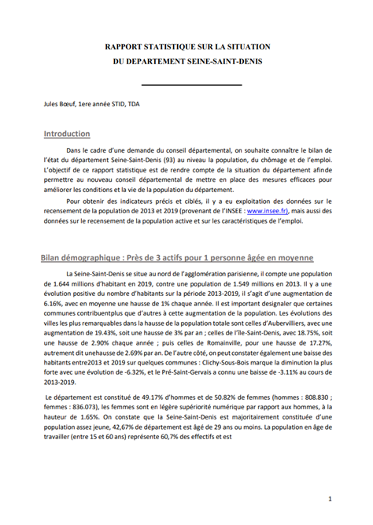
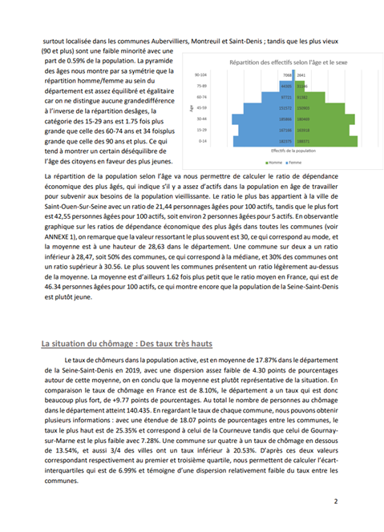

Apprendre en situation la production de données en entreprise
Dans le cadre d’un projet, j’ai dû rédiger un rapport statistique dans l’objectif de faire un bilan sur l’état du département Seine-Saint-Denis au niveau de l’emploi, de la population, et du chômage. Les données qui ont été utilisées pour le projet ont été récupérées du site de l’INSEE, elles m’ont permis de construire des indicateurs précis permettant de rendre compte de la situation du département. Le rapport a été rédigé entièrement sur Word, et les calculs des indicateurs ont été réalisés sur Excel.
Compétences acquises :
- Utilisation d’Excel et Word
- Amélioration de mes compétences rédactionnelles
- Compréhension de la rédaction et de la mise en forme d’un rapport
- Recherche de données et calculs d’indicateurs
Illustrations


Deux premières pages du rapport